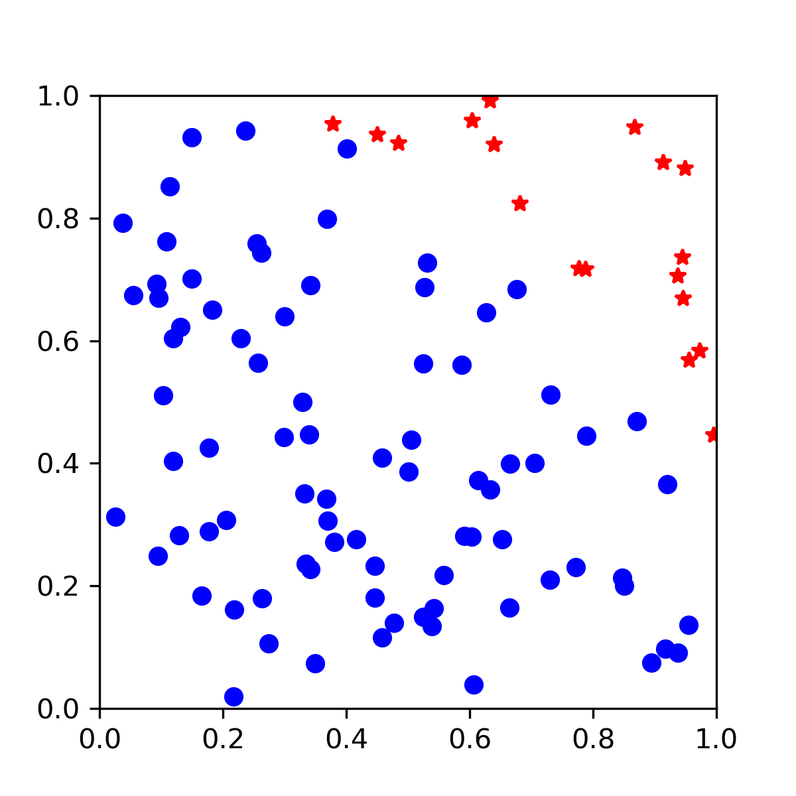

Intro to Monte Carlo Methods#
Overview
Questions:
What are Monte Carlo methods?
How can I use Monte Carlo to estimate pi?
Objectives:
Explain Monte Carlo methods.
Apply Monte Carlo method to calculate pi.
Apply Monte Carlo to calculate integrals
Day 2 - Overview Slides#
Introduction#
This module will cover calculating pi using Monte Carlo integration. For this module, as well as for the initial Monte Carlo code, we will use only libraries and functions which are part of the Python Standard Library. The Python Standard Library is the set of modules and functions that are distributed with Python. We will use Matplotlib (not part of Python standard library) for visualization.
Later in the course, we will also see how we can perform the calculations more quickly by utilizing the Python library NumPy.
Calculation of \( \pi \) using MC Integration#
In this lesson, we will be using Monte Carlo integration to estimate the value of \(\pi\). Monte Carlo techniques depend on the generation of random numbers.
We calculate \(\pi\) using random numbers and the unit circle. We will generate \(N\) random \((x, y)\) points with x and y values between zero and one. This corresponds to points in the first quadrant of a Cartesian coordinate system. We start with a counter equal to zero. If a randomly generated point lies inside of the unit circle, we will increase our counter by one. After \(N\) random numbers are generated, we can estimate the area of one quarter of the unit circle:
We will see a more mathematically rigorous explanation for this formula later. In our case, the tested area, \(A_{tested}\) is equal to 1, so the estimate of the area is simply the ratio of points inside the circle to the total number of points.
The area of a circle is related to \(\pi\) by \(A_{circle} = \pi*r^{2}\), meaning that for the unit circle, the total area is equal to \(\pi\).
Therefore, we can estimate the value of \(\pi\) for our points by multiplying our calculated area by 4 (since our points will all be in the first quadrant)
Writing our MC code#
To generate our random points, we will use the Python module random. The random library has functions related to random number generation.
We will also be using Python’s built in math module for operations like raising numbers to powers and accessing a reference value for pi.
First import the libraries:
import random
import math
We will begin our calculation with 100 randomly generated points. We define a variable called n_samples to contain this information.
n_samples = 100
Next, we start a counter (num_inside) for keeping track of how many points have fallen inside our unit circle.
num_inside = 0
To generate n_samples points, we use a for with the range function.
for i in range(n_samples):
print(i)
As a reminder, this for loop will print all numbers from 0 to 99. In this for loop, we don’t really care about the value of i, we are just using it to make sure the operation is done 100 times. For each loop iteration we need to
Generate a random x point on the range 0 to 1
Generate a random y point on the range 0 to 1
Calculate the associated value (\(x^2 + y^2\)). If the value is less than 1, increase
num_insideby 1.
n_samples = 100
num_inside = 0
for i in range(n_samples):
# Generate a random point between 0 and 1 for x.
x = random.random()
# Generate a random point between 0 and 1 for y.
y = random.random()
# Calculate the radius of this point
r = math.sqrt(x ** 2 + y ** 2)
if r < 1:
num_inside += 1
After running this code, we can get a guess for the value of \(\pi\).
# Calculate pi
4 * num_inside / n_samples
3.24
Your number will vary based on the random numbers which were generated. You will get a slightly different value for each calculation.
Visualization#
To get a better idea of what’s going on, we can add visualization using the Python library matplotlib. Matplotlib is not part of the Python standard library, but is widely used for data visualization.
To use the matplotlib library, add the following import to your notebook.
import matplotlib.pyplot as plt
We next create an empty figure using the plt.figure command. We then add an axis to this figure. Capturing the output of these commands as variables will allow us to continue to manipulate the figure.
fig = plt.figure(figsize=(4,4))
ax = fig.add_subplot(111)
fig.show()
Next, modify the loop where you calculated pi to add points to this plot when they are generated. We will modify this so that accepted points (points inside the circle) are plotted with blue circles while points outside of the unit circle are plotted with red stars. After the points are generated, we constrain the limits of the x and y axes.
# This time add points to plot as they're calculated.
# Start by using 100 samples.
n_samples = 100
num_inside = 0
for i in range(n_samples):
# Generate a random point between 0 and 1 for x.
x = random.random()
# Generate a random point between 0 and 1 for y.
y = random.random()
## Calculate the radius of this point.
r = math.sqrt(x ** 2 + y ** 2)
# if this value is less than 1, the point is inside the circle.
if r < 1:
num_inside += 1
# if inside add to plot
ax.plot(x, y, 'ob')
else:
ax.plot(x, y, 'r*')
ax.set_xlim(0, 1)
ax.set_ylim(0, 1)
An example output is shown below:
Improving the visualization#
We can add a circle to our visualization so that we can see the boundary of the unit circle
# Use patch in matplotlib to make a circle for better visualization
from matplotlib.patches import Circle
circle = Circle((0, 0), 1, color='k', alpha=0.2)
ax.add_patch(circle)
fig.show()
Monte Carlo in more detail#
Monte Carlo methods are numerical techniques frequently used to estimate complex multidimensional integrals which otherwise could not be performed. The idea of Monte Carlo integration is to estimate the value of an integral by generating random points from the probability density.
For instance, the integral of the function \(f(\textbf{x})\), where \(\textbf{x} \in \Re^{M}\), is approximated as
The idea of Monte Carlo integration is to estimate the expectation value by generating random samples of \(\textbf{x}\) from the probability density \(h(\textbf{x})\).
Uniform Probability Density#
We are free to chose the probability distribution \(h(\textbf{x})\). The simplest case is to uniformly generate \(\textbf{x}\) in the volume (\(V\)). In this way, \(h(\textbf{x})\) becomes constant as
Using this sampling density \(h(\textbf{x})\), the integral becomes
where N is the total number of random samples and \(f(\textbf{x}_i)\) is the integrand evaluated using the \(i^{th}\) sample.
Key Points
Monte Carlo methods calculate values through random sampling.